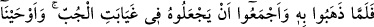
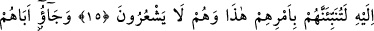
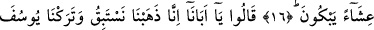
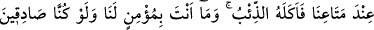
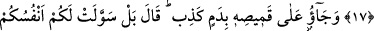
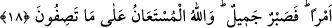

YÛSUF’U KURT YEMİŞ!
15. Onu götürüp de kuyunun dibine atmaya ittifakla karar verdikleri zaman, biz
Yûsuf’a: Andolsun ki sen onların bu işlerini onlar (işin) farkına varmadan,
kendilerine haber vereceksin, diye vahyettik.
16. Akşamleyin ağlayarak babalarına geldiler.
17. “Ey babamız! Biz yarışmak üzere gittik. Yûsuf’u eşyâmızın yanında
bırakmıştık. Onu kurt yemiş! Ama biz doğru söylesek de sen bize inanmazsın!”
dediler.
18. “Gömleğini üzerindeki sahte bir kanla getirdiler. (Yâkub) dedi ki: “Hayır,
aksine nefisleriniz size (kötü) bir işi güzel gösterdi. Artık (bana düşen) güzelce
sabretmektir. Anlattığınız karşısında (bana) yardım edecek olan, ancak Allah’tır.”
“Onu götürüp de…” Bu ifade hazfedilmiş bir ibareye bitişik olup takdiri şu
şekildedir: ‘Babası Yûsuf’a izin verdi ve kardeşleriyle birlikte gönderdi nihâyet onu
götürüp...’
Kıssanın tafsîlâtı şöyledir: Yâkub (a.s.) Yûsuf’un kardeşlerinin sahraya Yûsuf’la
birlikte çıkma konusundaki ısrarını, yeminlerle verdikleri sözleri ve Yûsuf’un da gezip
dolaşmaya meyil ve arzusunu görünce, kazaya razı olup izin verdi. Yûsuf’un Cebrail’in
Hz. İbrahim’e İsmail’e fidye olarak getirdiği koçun kanının içine akıtıldığı leğende
yıkanmasını, saçlarının taranmasını ve Cebrail’in İsmail için getirdiği yağla
yağlanmasını gözlerine de sürme çekilmesini emretti. Bütün bunlar yerine getirildi.
Rivâyete göre İbrahim (a.s.) elbiseleri soyularak ateşe atıldığı sırada Cebrail
kendisine cennet ipeğinden mamul bir gömlek getirip vermiş ve bu gömlek İbrahim
(a.s.)’dan İshak (a.s.)’a, ondan da Yâkub (a.s.)’a kalmıştı. İşte Yâkub (a.s.) bu gömleği
bir bohçaya koyup bohçayı Yûsuf’un boynuna astı.
el-Kâşifî der ki: “Yâkub (a.s.) Yûsuf’un koluna muska bağladı. Kenan şehrinin büyük
kapısının üzerinde olan “Şeceratü’l-vedâ” denilen yerin dışına kadar çıkıp oğullarını